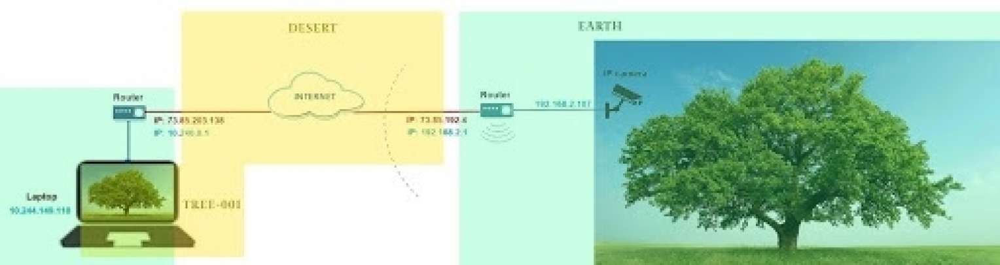

This fiction depicts the project “Tree-001.” The basic premise is to plant a tree somewhere in the Netherlands and livestream it. The video stream will be visible on a dedicated website continuously until the tree dies: tree-001.com.
The First Tree
A tree is planted in a desert. There has never been a tree in this land. This is the first one. This land is a dimension deprived of actuality. Representations make up every grain of this world. Gardeners, who traverse between the desert and Earth, give the tree all the necessities it might need to start its life here. The gardeners have great anticipation, but they also are tensed at the thought that their human life is too short to care for this grandiose creature which might live a thousand years. On the other extreme, they are concerned that the fugitive and precarious nature of this desert might be too hostile for the tree, letting it collapse sooner than expected. We humans do not know for sure. The tree might not be anything more than a hologram, a digital ghost.
Earth and desert
It has been quite a heavy labor to get this tree here from Earth. The Earth tree, a 3-year-old (Earth time) common oak, exists firmly on a meadow, a vast protected nature reserve in the south of the Netherlands, the exact coordinates: 52°13'02.9"N 5°05'26.5"E. The virtual tree on the desert of pixelated data is a parallel, an extension, or perhaps an augmentation of the Earth tree. The gardeners named this virtual tree Tree-001, marking in its name the first tree to be living on the digital desert. Considering Tree-001 as an extended body of the Earth tree, the gardeners regard the entire being as a cyborg; the cyborg world tree that connects two different dimensions.
Intentions
In the very beginning, it was an experiment out of curiosity. The gardeners intended to compare and expand the boundary of living space to the unknown world as we did 102 years ago with the planet Mars. It might have been our greed to control and occupy new territories, even to an extent of possessing the experience of being in places. The indirectness of experience does not stop this craving. However, the action of planting the young living tree on Earth and the arduous grounding of its extension on the desert has shifted the focus from humans to trees, bringing about new yearnings.
Gravity
The desert had to transform itself a little to host Tree-001, as the Earth tree also had to extend and mutate to be planted here. On Earth, gravity plays a big part in the morphology of trees. On the desert when the drifting sand of information had no gravity, the tree could not ground itself. In this particular place addressed as tree-001.com, gravity starts to take place for brief moments of time, continuously. This virtual gravity holds the data that comes from the server, an intermediary on Earth that takes part in the electronic root system of the Earth tree. The data gets fixated for a fraction of a second until the next dataset comes to be fixated and discarded, and on. The gravity simultaneously molds this data, so that it becomes pulsating living cells of the virtual tree. Every dataset is new, with a refresh rate of 15 frames per second. Tree-001 generates new sets of visible cells every one-fifteenth of a second.

Bridging Root
Gardeners wish that this new body would be capable of generating its own power to transform the digital land. It is yet unclear what kind of power this can be. It might be an existing power that the Earth tree gushes out, transmitted through the bridging root the gardeners have built. The root bridges the Earth tree and Tree-001. The new root is fragile. It consists of physical and digital parts, even the beginning of the root does not physically attach to the Earth tree.
Organs
This first part of the root begins from the camera looking at the Earth tree. The camera here is an organ that surveils its main body, looking at its own image, which at the same time can transform itself into data that travels through the electronic root. At the end of this root system, this data eventually transforms into the cells of Tree-001. These electronic organs suck their nutrition through the wires. Electricity is delicious and creative, but at the same time destructive.
Physical World Feeding The Virtual
No living matter survives without killing another. That simple rule binds the physical and virtual spaces, as every burning pixel, every movement of data, every transformation in the digital realm is the blood of the physical world. We cannot measure how many trees die each day to maintain this kingdom of information. Humans have successfully detached the causes from effects concerning the development of technology. The virtual realm is the latest most deceptive paradise in this divided world. What is seen within the digital world lies as close to one another as a fraction of a second, in contrast to the remoteness of the physical beings that sustain this world from outside.
Trees’ Creative Forces
On Earth, trees cultivate places with stories, rituals, and dwellings. A tree is a living body and, at the same time, a home. It is an architect and architecture. It is a space and place. It is a carrier bag, a spirit, an inspiration, a symbol, and an idea. Trees have inspired humans and animals to start the ways of living and dying on Earth. The gardeners have seen oak trees that lived 1,400 years, built cities around them, and furnished the evolution of its symbiont creatures. Trees’ ways of building, transforming, reproducing, and dying may now take their due in the digital realm. As the internet is a desert built solely by human hands, it is humans that need to plant the first tree. Once a pioneer tree lands on a new field, it will live, propagate, and when successful, make a forest. As it passes that threshold, human desire to own this tree will be discarded and overpowered, as a dense forest can not be fully controlled. Nature pushes back.
The Limits of Being Human
The gardeners have doubts. They might be mistaken to think that they are working in favor of the tree. Maybe the tree’s intentions lie completely somewhere else. The tree exerts its forces in unpredictable ways. Tree-001 could end up being yet another tool for humans, serving to preserve the fragile digital world. The web space tree-001.com could be the last piece of the internet that survives after a thousand years, thanks to being a parasite to the Earth tree. The soil of this desert might be way too acidic for even a pioneer tree to survive, as the hierarchy between humans and non-humans in this realm is too heavy. The humans might fail to temper this artificial desert. We would be dismissing nature once again.
The Limits and Possibilities of Being a Tree
"The tree might struggle to remain a tree in this digital world," the gardeners presume. "Or is the tree nothing and everything? The boundary of the tree might have no limits, so what it becomes does not matter." The conflicting thoughts will accompany the gardeners for a long time.
The location of the physical tree in this story is a fictional one. Where it will be eventually planted is still under question. The tree is now growing from a seed at Sunjoo Lee’s balcony at Strijp-S, Eindhoven, the Netherlands, as shown in the livestream at tree-001.com. The project is advised by web developers/programmers Sergio Badillo and Jip de Beer.
Written by Sunjoo Lee, Seokyung Kim and Timm Donke
September 14, 2021
This text is introduced in Society For Cultural Anthropology
References
Jones, Owain, and Paul Cloke. 2002. Tree Cultures: The Place of Trees and Trees in Their Place. Oxford: Berg.
Sontag, Susan. 1978. Susan Sontag on Photography. London: Allen Lane.
Beckmann, John. 1998. The Virtual Dimension: Architecture, Representation, and Crash Culture. New York: Princeton Architectural Press.
Haraway, Donna. 2016. Staying with the Trouble: Making Kin in the Chthulucene. Durham, NC: Duke University Press.
Whatmore, Sarah. 2002. Hybrid Geographies: Natures Cultures Spaces. London: SAGE Publications Ltd.